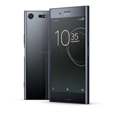

3 GB RAM
32 GB eMMC (Tek SIM)*
Tek SIM
Google Android™ N
Qualcomm® Snapdragon™ 820, 64 bit iþlemci
2900 mAh
Qnovo Adaptive Charging
Pil Bakýmý
IP65/IP68***
161 gr
5,2 inç Full HD 1080p
Cep telefonu için TRILUMINOS™ Ekran
23 MP
Üçlü görüntü algýlama teknolojisi
Öngörücü Hibrit Otomatik Odaklama
Hýzlý Fotoðraf Çekme
Az ýþýkta fotoðraf çekme: ISO 12800'e kadar
Cep telefonu için 1/2,3 inç Exmor RS™ görüntü sensörü
Yüksek Çözünürlüklü Ses (LPCM, FLAC, ALAC, DSD)
DSEE HX
LDAC
Dijital Gürültü Önleme